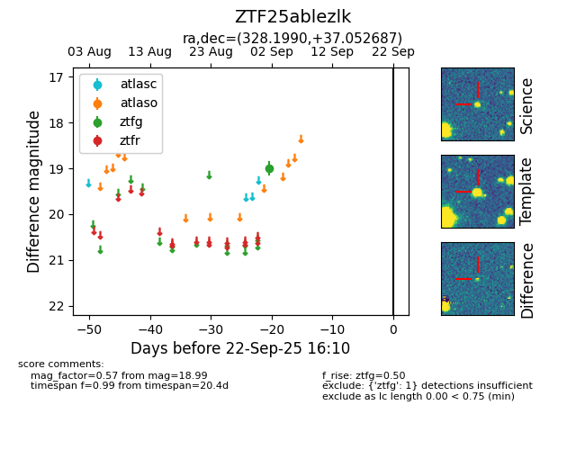

FINK: ZTF25ablezlk
Lasair: ZTF25ablezlk
ALeRCE: ZTF25ablezlk
ZTF25ablezlk (ztf,fink)
equatorial (ra, dec) = (328.1990,+37.05269)
galactic (l, b) = (87.7276,-13.32418)

last ztfg=18.99
1 ztfg detections